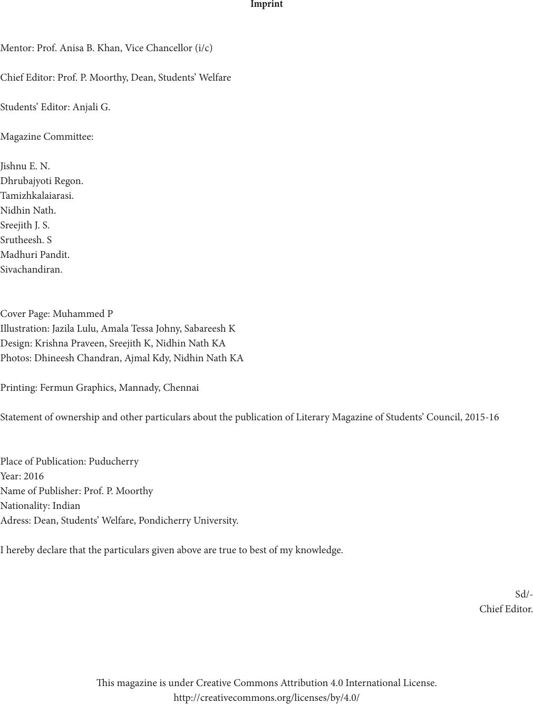

Imprint
Mentor: Prof. Anisa B. Khan, Vice Chancellor (i/c)
Chief Editor: Prof. P. Moorthy, Dean, Students’ Welfare
Students’ Editor: Anjali G.
Magazine Committee:
Jishnu E. N.
Dhrubajyoti Regon.
Tamizhkalaiarasi.
Nidhin Nath.
Sreejith J. S.
Srutheesh. S
Madhuri Pandit.
Sivachandiran.
Cover Page: Muhammed P
Illustration: Jazila Lulu, Amala Tessa Johny, Sabareesh K
Design: Krishna Praveen, Sreejith K, Nidhin Nath KA
Photos: Dhineesh Chandran, Ajmal Kdy, Nidhin Nath KA
Printing: Fermun Graphics, Mannady, Chennai
Statement of ownership and other particulars about the publication of Literary Magazine of Students’ Council, 2015-16
Place of Publication: Puducherry
Year: 2016
Name of Publisher: Prof. P. Moorthy
Nationality: Indian
Adress: Dean, Students’ Welfare, Pondicherry University.
I hereby declare that the particulars given above are true to best of my knowledge.
Sd/-
Chief Editor.
is magazine is under Creative Commons Attribution 4.0 International License.
http://creativecommons.org/licenses/by/4.0/